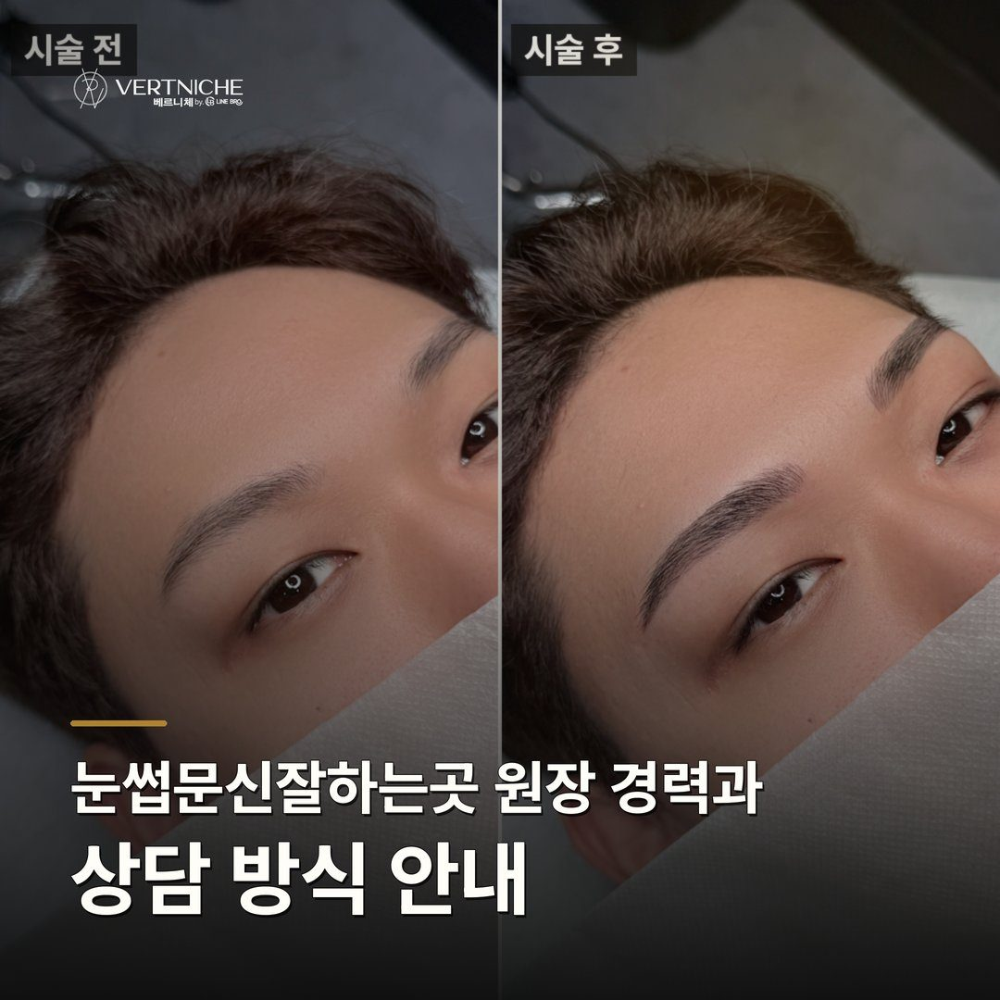
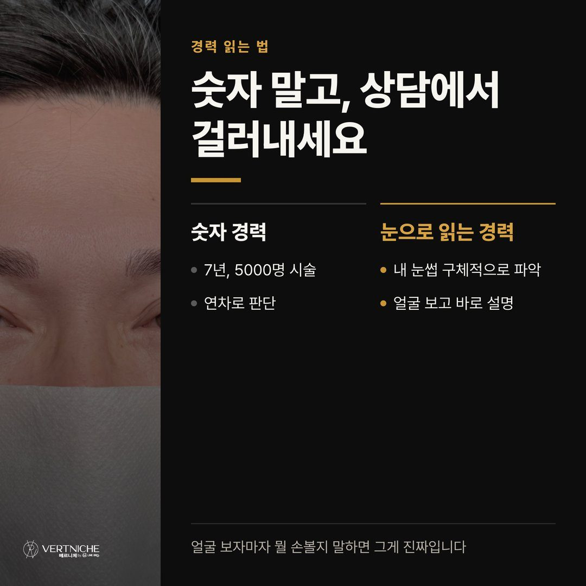
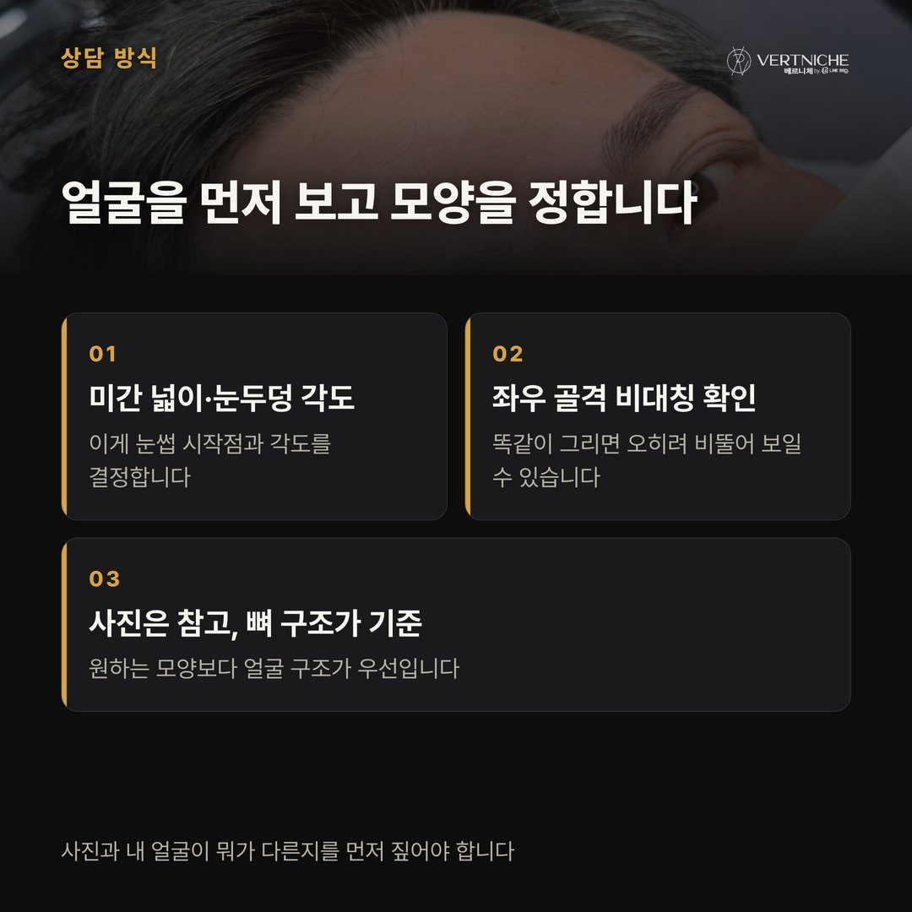
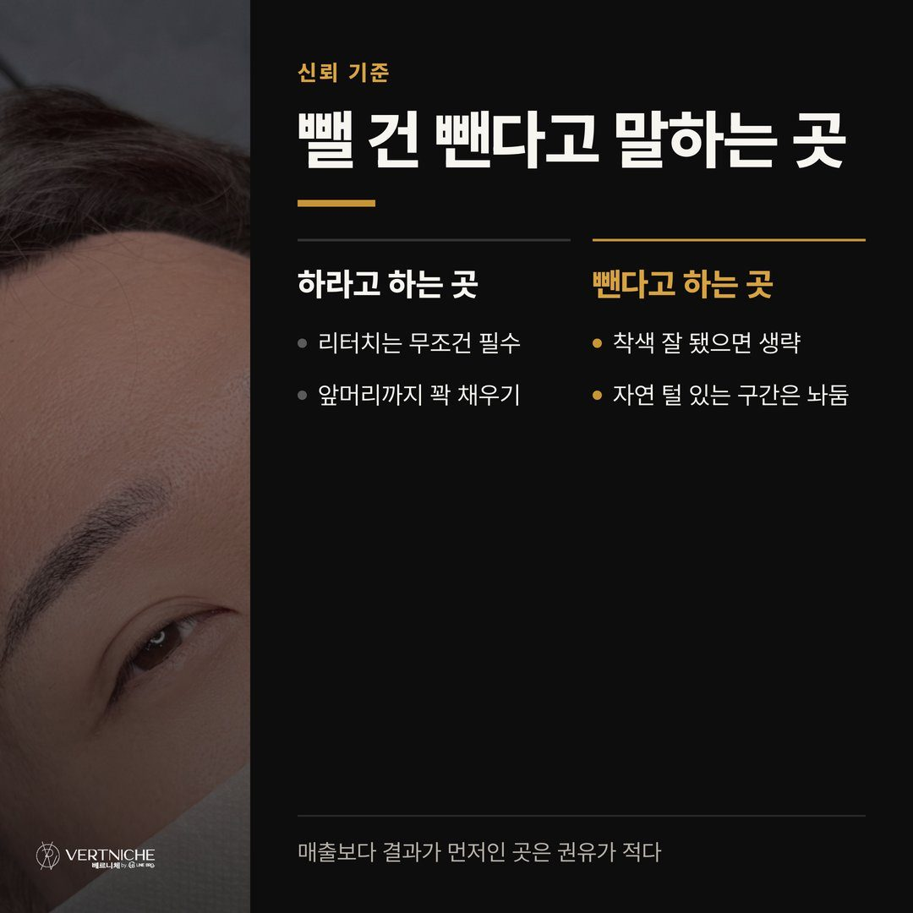
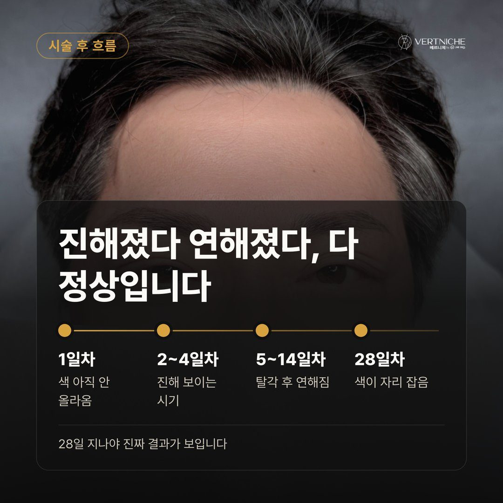
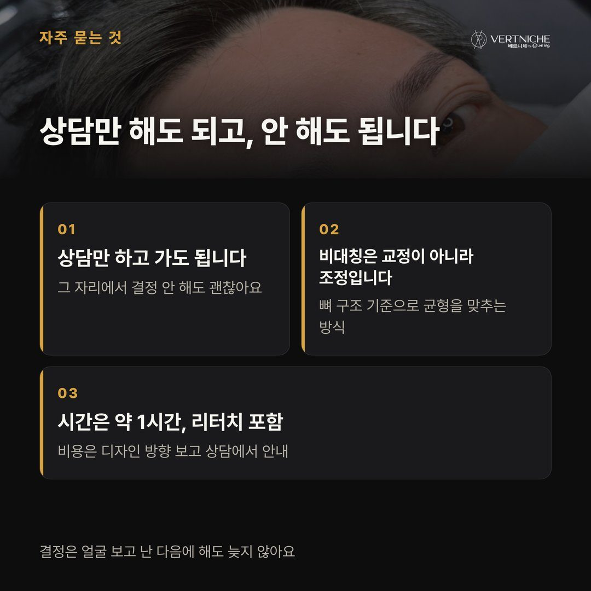
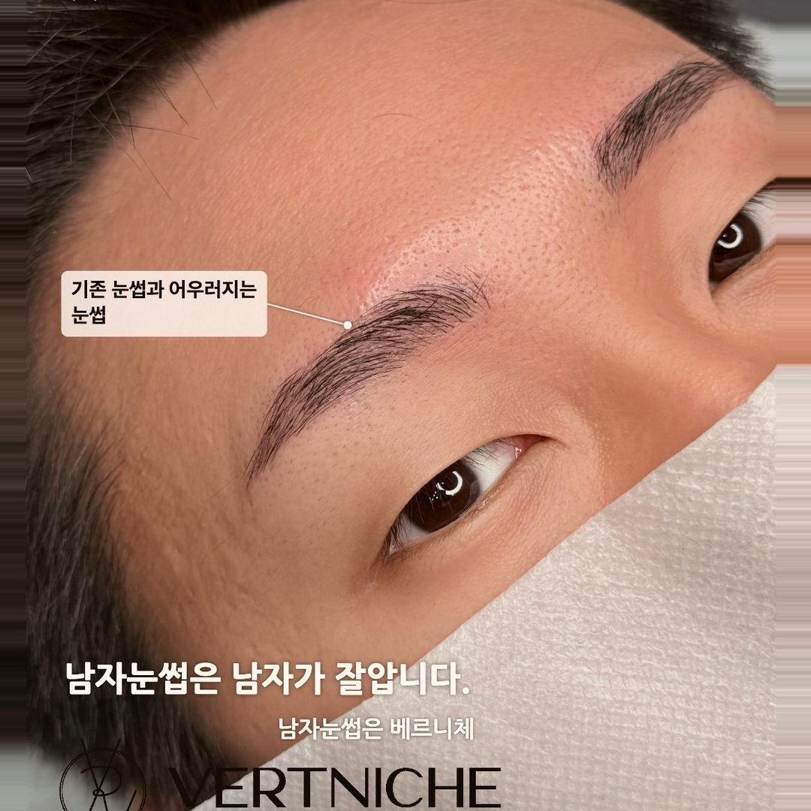
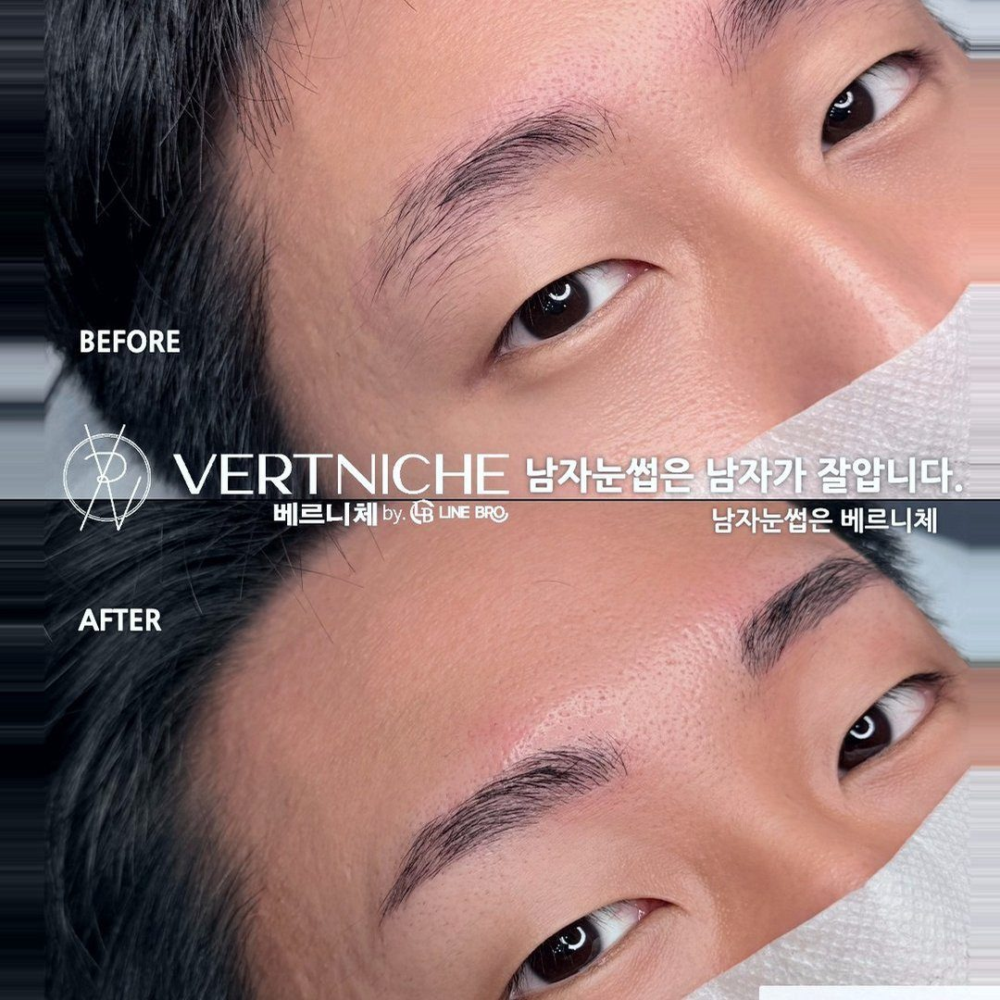
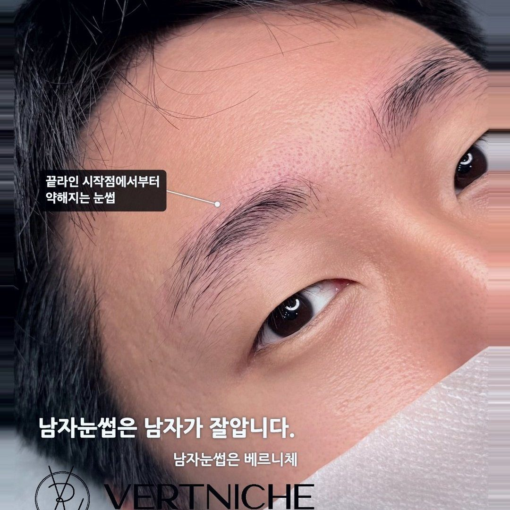
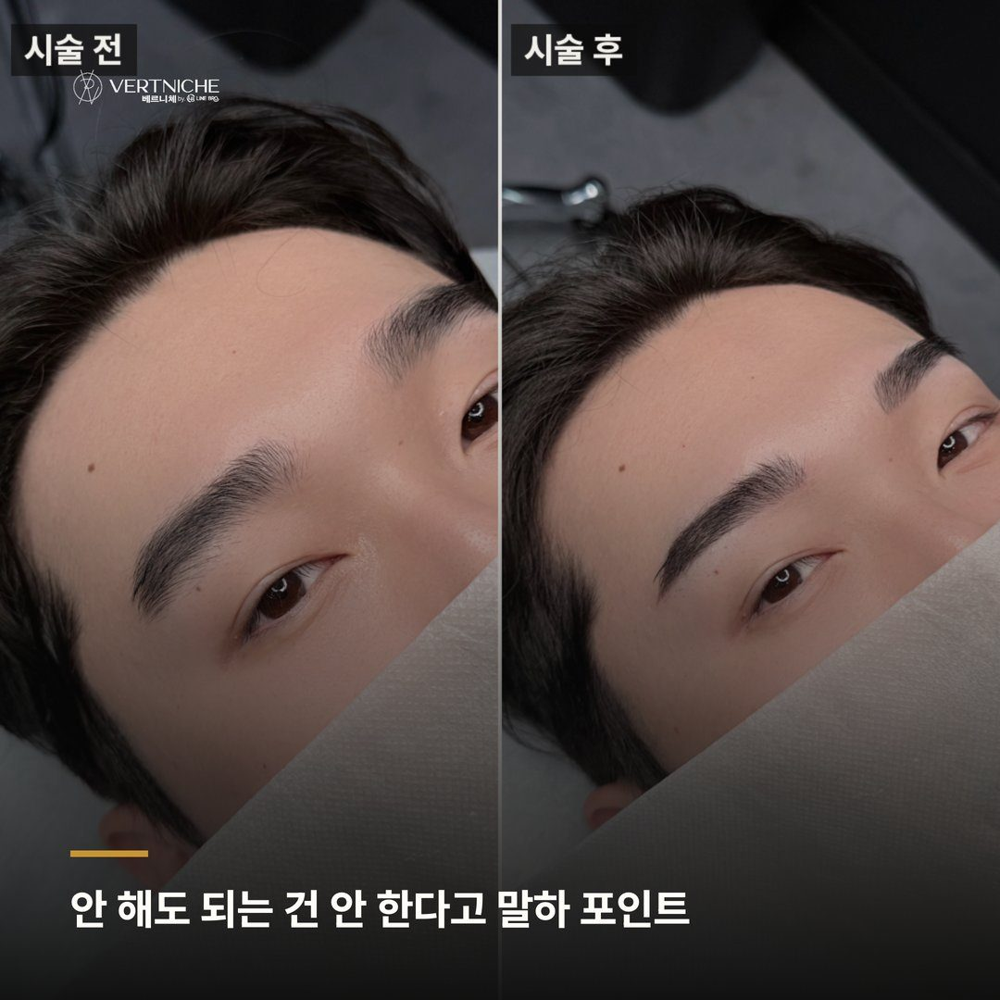

대구눈썹문신 잘하는곳 고르는 기준, 원장이 뭘 보는지가 답이에요

후기 사진은 다 예뻐 보여요. 그게 문제예요.
검색해보면 다들 잘한다고 나오고, 비포애프터도 죄다 깔끔하게 나와 있으니까 뭘 보고 골라야 할지 모르겠는 거죠. 상담에서도 꼭 이 얘기가 나와요. "어디가 잘하는지 진짜 모르겠어요."라고. 저는 그럴 때 이렇게 말씀드려요. 결과물 사진보다, 그 사람이 상담할 때 뭘 확인하는지를 보라고요. 잘하는 곳은 실력이 상담 단계에서 이미 드러나거든요.
7년, 5,500명. 이 숫자를 쌓으면서 확실해진 게 있어요. 눈썹문신 잘하는 곳은 결국 시술 전에 얼마나 정확하게 보느냐에서 갈린다는 거예요.
경력 년수보다 그 시간으로 뭘 봐왔는지를 확인하세요
7년, 5,500명. 저도 이 숫자를 쓰긴 해요. 근데 솔직히 숫자 자체는 그냥 참고선이에요. 중요한 건 그 시간 동안 어떤 얼굴들을 봐왔느냐예요. 미간 넓은 사람, 눈두덩 처진 사람, 한쪽 이마 근육이 더 발달한 사람, 왁싱을 오래 받아서 결이 얇아진 사람. 이런 케이스를 손으로 직접 만져보고 시술한 횟수가 쌓이는 거지, 그냥 시간이 흐른 게 아니에요.
그래서 경력을 볼 때는 몇 년 했는지보다, 상담에서 내 눈썹을 얼마나 구체적으로 읽어내는지를 보시는 게 맞아요. 진짜 많이 해본 사람은 얼굴을 보자마자 어디를 손봐야 할지가 보이거든요. 진짜 실력은 내 얼굴 앞에서 나오는 거예요.
모양 먼저 물어보지 않는 곳
상담 오시면 대부분 사진부터 꺼내세요. "이 모양으로 해주세요" 하면서요. 근데 저는 사진 얘기를 바로 안 받아요. 먼저 얼굴 골격부터 봐요.
좌우 이마 근육이 확실히 다른 분이 오신 적이 있는데, 원하시는 모양대로 양쪽 똑같이 그렸으면 오히려 비뚤어 보였을 거예요. 뼈 구조가 다르니까요. 눈썹은 모양을 먼저 정하는 게 아니라, 얼굴이 어떻게 생겼는지를 먼저 봐야 해요. 미간 넓이, 눈두덩 각도, 이마 라인. 이게 눈썹 시작점이랑 각도를 정하거든요.
잘하는 곳이냐 아니냐는 여기서 갈려요. 손님이 보여준 사진을 그대로 따라 그리는 곳이 아니라, 그 사진과 내 얼굴이 뭐가 다른지를 짚어주는 곳. 이걸 짚어주면 믿으셔도 돼요.
안 해도 되는 건 안 한다고 말해주는 곳
이게 의외로 가장 믿을 수 있는 기준이에요.
리터치를 예로 들게요. "4주 뒤에 꼭 리터치 받아야죠?" 이 질문 정말 많이 받는데, 저는 필수 아니라고 말씀드려요. 실제로 리터치가 필요한 분은 10명 중 1~2명 정도더라고요. 착색이 잘 됐으면 굳이 안 하는 게 나아요. 기존 눈썹 앞머리가 살아있는 분한테도 마찬가지예요. 앞쪽까지 다 채우면 잉크랑 진짜 털이 섞여서 밀도 차이가 오히려 티가 나거든요. 그 구간은 남겨두시는 게 낫다고 설명드려요.
안 해도 되는 걸 안 한다고 말해주는 곳, 이게 신뢰할 만한 곳이에요. 다 하면 매출은 늘겠죠. 근데 손님 결과가 우선이면 뺄 건 빼야 해요.
시술 후 흐름을 미리 알려주는 곳
눈썹문신은 시술 당일이 아니라 28일 뒤가 진짜 결과예요. 이 흐름을 모르면 중간에 꼭 당황하시거든요.
대충 이런 식으로 흘러가요.
시기
상태
1일차
색이 아직 안 올라온 느낌
2~4일차
진해 보임
5~7일차
탈각되면서 빠지는 것 같음
8~14일차
오히려 연해 보임
15일~
색이 다시 올라오기 시작
28일쯤
자연스럽게 자리 잡음
이 흐름을 미리 안 알려주면 진해지는 시기에 당황하고, 연해지는 시기에 후회하게 돼요. 관리는 별거 없어요. 물이랑 땀 조심하고 가만히 두는 거, 딱지는 절대 뜯지 마시고요. 시술 후 잔털이 구불구불 자라면 쪽집게 말고 면도칼로 정리하시라고 안내드려요. 이렇게 시술 뒤 흐름까지 챙겨주는 곳을 고르셔야 나중에도 만족하게 돼요.
자주 오는 질문들
Q. 상담만 받아봐도 되나요? 네, 당연히 돼요. 얼굴 보고 어떤 방향이 맞는지 들어보신 다음에 정하시는 걸 오히려 권해요. 그 자리에서 억지로 결정하실 필요 전혀 없어요.
Q. 비대칭이 심한데 어색해지지 않을까요? 기존 눈썹 범위 안에서 디자인을 잡기 때문에 크게 이질감 나진 않아요. 좌우 골격 차이를 보고 뼈 구조에 맞춰 조정하니까, 오히려 지금보다 정리된 느낌이 나는 경우가 많아요. 완벽한 대칭보다 얼굴에 맞는 균형을 잡는 쪽이에요.
Q. 시술 시간이랑 비용은 어느 정도예요? 남자 눈썹문신 기준 약 1시간 정도 걸리고, 리터치 1회가 포함된 금액이에요. 디자인 방향에 따라 달라질 수 있으니 자세한 건 상담에서 얼굴 보면서 안내드리는 게 정확해요.
포스팅 요약
• 결과물 사진보다 상담에서 내 얼굴을 얼마나 구체적으로 읽어내는지를 봐야 해요
• 안 해도 되는 시술을 뺄 줄 아는 곳, 28일 흐름을 미리 알려주는 곳이 기준이에요
• 상담만 받아보셔도 돼요. 가보고 느낌 보시는 걸 권해요
궁금한 점은 아래 링크에서 편하게 문의 주시면 돼요.
동성로 눈썹문신, 재방문 때 같은 디자인 유지되는 이유
대구 눈썹문신 해외 거주 고객 리터치와 피부관리 기준
눈썹문신후세안 언제부터 하는지 4주 회복 기준
더 보기 / 상담
남자관리 사례랑 눈썹문신 결과는 인스타에 계속 올리고 있어요. 시술 사진이랑 관리 팁은 아래 링크에서 더 보실 수 있습니다.
시술 사진









이 글은 네이버 블로그에도 같은 내용으로 올라가 있습니다.